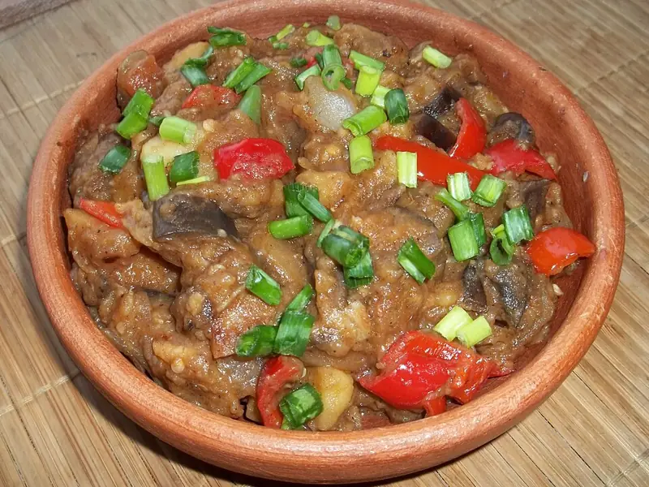

Фото: Georgian Recipes at Georgia About, CC BY 3.0

Аджапсандали
Овощное рагу из баклажанов, перца и помидоров с кинзой и базиликом
60 мин4 порц.288 ккал на порциюБ 5 · Ж 20 · У 22Кавказская кухня
Продукты на 4 порц.
- Баклажан2 шт
- Перец болгарский2 шт
- Помидоры4 шт
- Лук репчатый2 шт
- Чеснок3 зуб.
- Растительное масло5 ст. л.
- Кинза1 пучок
- Базилик0,5 пучок
- Перец чили по желанию0,5 шт
- Соль1,5 ч. л.
- Перец чёрный молотый1 щеп.
Как готовить
- Нарежьте баклажаны кубиками 2 см, посолите, перемешайте и оставьте на 15 минут. Затем отожмите выделившийся сок.
- Разогрейте половину масла на среднем огне и обжарьте баклажаны 7-8 минут до мягкости и румяных краёв. Выложите в тарелку.
- В оставшемся масле обжарьте лук полукольцами 5 минут, добавьте перец полосками и жарьте ещё 5 минут.
- Верните баклажаны, добавьте порезанные кубиками помидоры, перемешайте.
- Накройте крышкой и тушите на слабом огне 20 минут, пока овощи не станут мягкими, но не разварятся в кашу.
- Добавьте рубленые кинзу, базилик, чеснок, чили, соль и перец. Прогрейте 3 минуты и выключите.
Совет. Аджапсандали вкуснее на следующий день и хорошо идёт холодным как закуска. Хранится в холодильнике 3 дня.